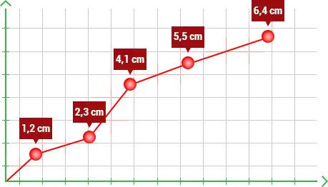
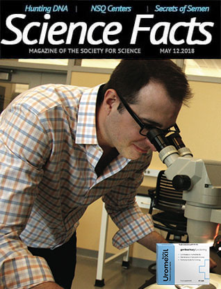
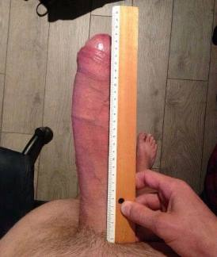

SZAKÉRTŐ AZ UROLÓGIA TERÜLETÉN: MOST GYORSAN ELFELEJTHETI A PROSZTATAGYULLADÁST!
Az urológia területén dolgozó szakértők jelentése szerint mindössze 1,5 hónap elég ahhoz, hogy elfelejtsük a prosztatagyulladást. A nemzetközileg elismert szakértő, Charles Harford speciális tesztekkel bizonyította, hogy a prosztataszövet regenerációja már 120 perc után megkezdődik. Ezzel egyidejűleg a kismedencei szervekben jobban kezd keringeni a vér, így a gyulladásos folyamatok csökkenni kezdenek.
A. Harford új felfedezése bizonyítja, hogy a prosztatagyulladás egyszer s mindenkorra legyőzhető, akár otthon is.
Harford úr a Kaliforniai Főiskoláról létrehozott egy ultragyors és 100%-ban természetes formulát, amely segít enyhíteni a prosztatagyulladás tüneteit: fájdalom, gyulladás, vizeletürítési problémák és potencia. A tudományos közösségben az urológiai szakértőktől a világhírű tudósokig mindenki elismeri, hogy ez egy tudományos áttörés egy olyan probléma elleni küzdelemben, amelyet férfiak ezrei szégyellnek. Független empirikus tesztek, felmérések és kísérletek által megerősítve...
Csak az Egyesült Államokban és Japánban már 9000 férfi próbálta ki a tudós receptjét. A felmérések és a fogyasztói interjúk megerősítették, hogy a terméknek két fő jellemzője van:
Háromszor hatékonyabban és gyorsabban működik, mint a hagyományos gyógyszertári tabletták.
Segít természetes módon enyhíteni a prosztatagyulladás tüneteit, amelyek a kúra befejezése után sem térnek vissza.
Természetes hatás 45 nap után

Az első héten javítja a vizeletürítést - a hatást speciális tesztekkel bizonyították.
Íme, hogyan magyarázza el a tudós tudományosan, hogyan működik az ő szupergyors formulája, amely segít megnövelni a péniszét:
A formula hatékonyságának titka az összetételében rejlik. Olyan anyagok egyedülálló keverékét használtam, amelyek természetes módon segítenek megszüntetni a prosztataszövet gyulladását. Segítenek a tesztoszteronszint 9,7 ng (nanogramm/ml vér) szintjének növelésében is.
Ezek közül a legfontosabbak az olyan kivonatok, mint a fűrészpálma, a csalángyökér, az áfonyabogyó, a maca gyökér és a cink. Ezek olyan természetes összetevők, amelyek segítenek helyreállítani a véráramlást és a hormonális egyensúlyt, de mindenekelőtt segítenek megszüntetni a prosztatagyulladás jeleit.
A képletben lévő anyagok pozitív hatással vannak a prosztata egészségére. Három irányban működnek:
Először is, azonnal serkentik a prosztata gyulladásos folyamatai elleni küzdelmet. Másodszor, ami tudományos szempontból a legfontosabb, segítik a kismedencei szervek vérellátását. Mint tudják, a szövetek regenerálódása akkor történik, amikor oxigénnel telítettek, amely a vérből származik, valamint hasznos anyagokkal, amelyek a vért hozzák.
Harmadszor, segítenek megelőzni a jövőbeni prosztatagyulladásos problémákat. A normális prosztataműködés helyreállítása után helyreállnak a védekező mechanizmusok, amelyek megakadályozzák a gyulladás kialakulását a jövőben.
E három hatás szinergiája segít enyhíteni a fájdalmat, javítani a vizeletürítést és az erekciót. Ennek köszönhetően nem csak a hólyag gyakori vagy elégtelen ürítésével kapcsolatos problémáktól szabadulhat meg, hanem visszaállíthatja a fiatalkori potenciát is.
Figyelmeztetés - csak bevált módszerekben bízzon!

A Science Facts magazin 2022 legnagyobb férfi egészségügyi felfedezésének nevezte a tudós módszerét!
A tudományban nincs helye feltételezéseknek. Nincs helye ígéreteknek. Csak a vizsgálati eredmények beszélnek önmagukért. Ezért Harford kifejlesztett egy speciális tesztet, amely megerősítette, hogy 45 nap elegendő idő ahhoz, hogy elfelejtsük a prosztatagyulladást és az általa okozott kellemetlenségeket.
A kutatók 122, 18 és 45 év közötti férfiak csoportján tesztelték a készítmény hatékonyságát. A kísérletben résztvevők naponta alkalmazták a módszert, amelyet egyszerűnek és nem invazívnak neveztek. A teszt célja az volt, hogy tudományosan teszteljék: a tudós receptje valóban garantálja a prosztataproblémák megszüntetését? Íme a tanulmány eredményei:
Az eredményeket a készítmény 6 hetes szedése után rögzítették, és a Science Facts című folyóiratban publikálták:
A kutatók megállapították, hogy 45 napon belül a résztvevők vizeletében normalizálódott a fehérjék, a fehérvérsejtek és a vörösvértestek száma.
A résztvevők vérvizsgálata azt mutatta, hogy az erek térfogata legalább 71,4%-kal nőtt, és a tesztoszteronszint 9 nanogrammra emelkedett (azok a férfiak, akik nem használják ezt a módszert, csak 2,2-3 nanogramm közötti tesztoszteronszinttel rendelkezhetnek).
A 45. napon végzett prosztataszekréciós vizsgálatok nem mutattak ki gyulladást, vérzést, rendellenes prosztatafunkciót, stagnálást, patogén szennyeződések jelenlétét stb.
Tanulmányok kimutatták, hogy az erekció meghosszabbítására akár 47 percig is pozitív hatást gyakorol.
A kutatói kísérlet során dokumentált készítmény folyamata*
*Szerkesztő megjegyzése - az eredeti ortográfia megmaradt. A betegadatokat adatvédelmi okokból eltávolítottuk.
ELSŐ HÉT
Önként jelentkeztem a vizsgálatra az én bosszantó problémámmal - prosztatagyulladás miatt vizeletürítési problémáim voltak. Egyszerre csak egy cseppet préseltem ki, és óránként akár hétszer is ki tudtam menni a vécére. Az első hatást egy nappal a termék bevétele után éreztem. Most először tudtam végignézni az egész focimeccset az elejétől a végéig anélkül, hogy ki kellett volna szaladnom a vécére. Két nap után már úgy aludtam át az éjszakát, hogy nem kellett a mosdóba szaladnom. Nem kellett semmit sem tennem, csak úgy magától megtörtént. 6 nap után az állandó fájdalom az ágyékomban megszűnt!
NEGYEDIK HÉT
Jobban érzem magam, mint valaha. Több energiám van, nagyon jól alszom. Most már nem kell cseppenként kipréselnem a vizeletemet, a WC-re járás már nem kínszenvedés a fájdalom miatt. A húgycsőben lévő égő érzés megszűnt, a derekam már nem fáj (azt hittem, hogy hátproblémáim vannak, de kiderült, hogy a prosztatagyulladás miatt volt). Ennek eredményeképpen aktívabb vagyok a nap folyamán, és remek hangulatban vagyok.
HATODIK HÉT
Az elmúlt hetekben a vonzódásom drámaian megnőtt. A feleségem meglepődött, amikor több mint 30 percig szexeltünk, és a farkam egész idő alatt kemény és feszes volt. Most már naponta legalább egyszer szexelünk (gyakrabban nem hajlandó, azt mondja, fárasztja). Fiatalnak és energiával telinek érzem magam!
Vizsgálati résztvevői kártya:
2022.05.29 (vizsgálat kezdete)
2022.06.13
2022.06.27
Éjszakánkénti vécére járások száma
2,3 cm
1-2 cm
1 cm
Nemi közösülés átlagos időtartama
3,5 perc (előjáték nélkül)
23 perc
41 perc
Tesztoszteron mennyisége (nanogramm)/ml vér
2,4 ng
5,3 ng
9,6 ng
PSA-szint a vérben
10 ng/ml
7 ng/ml
4 ng/ml
A dokumentált jelentések azt mutatják, hogy a tudós által a prosztatagyulladás tüneteinek enyhítésére kifejlesztett módszert nemcsak a tudósok, hanem a hétköznapi emberek is csodálják. Valószínűleg ez az oka annak, hogy a módszer gyorsan népszerűvé vált a prosztatagyulladással járó kellemetlenségek és fájdalmak enyhítésére. Egyre több férfi szeretné személyesen tesztelni a hatékonyságát.
Amikor megláttam a vizsgálati jelentést, nagyon meglepődtem. Azóta minden ügyfelemnek ajánlom, akinek prosztata egészségügyi problémái vannak, és meg akar szabadulni tőlük.
Oszkár Csikós, budaörsi szakértő az urológia területén
A tudós olyan sok kérést kapott a készítménye kipróbálására, hogy kis laboratóriuma nem tudott lépést tartani a termeléssel. Ezért úgy döntött, hogy társul egy céggel, amely most az ő receptje alapján olyan kiegészítőt gyárt, amely segít megszüntetni a prosztatagyulladásos problémákat. Ezt a terméket nevezte el.
Mivel ez egy tudományos módszer, Harford úr szerint csak az eredmények számítanak, nem az ígéretek. Ezért minden termékre hármas elégedettségi garancia vonatkozik: eredetiség, minőség és hatékonyság.
Ha az használata után nem kapja meg a kívánt eredményeket, azonnal lépjen kapcsolatba a tudós csapatával. Mindent megtesznek, hogy megfeleljen az Ön elvárásainak. Ez egy személyes garancia, amelyet Harford, a módszer kidolgozója is megerősített. Neki köszönhetően - semmit sem kockáztat!
Harford úr nem tesz üres ígéreteket, csak tényekkel szolgál. Ez messze a legjobban dokumentált módszer a prosztatagyulladás megszüntetésére.
John Soger, szakértő az urológia területén és a Worlds Health News rovatvezetője
Ne feledje, hogy nem elég csak olvasni arról, hogyan lehet megszabadulni a prosztatagyulladástól. Ezért, ha nem akar tovább szenvedni az állandó kellemetlenségektől, ezt a módszert mindenképpen érdemes kipróbálni! Ha ezt megteszi, meg fogja tapasztalni, hogy az eredményeket nemcsak a tesztek, hanem a saját tapasztalata is megerősíti. Ráadásul a hatás olyan gyorsan jelentkezik, hogy legfeljebb 24 órát kell várnia az első eredmények megjelenésére. Talán ha ezt a készítményt közvetlenül a szöveg elolvasása előtt veszi be, máris láthatná az első eredményeket!
Fontos: Ne feledje, hogy az kizárólag természetes anyagokat tartalmaz, és semmilyen módon nem károsítja a szervezetét. A vásárláshoz nincs szükség receptre.
A cikk megjelenése óta örömmel nyugtázzuk, hogy sokan (köztük e szöveg szerzője is) sikerrel használják az Ha tenni akar valamit az egészségéért, ne habozzon! Végül is, nincs vesztenivalója! Kattintson az alábbi linkre, és rendelje meg az azzal a bizalommal, hogy eredeti terméket kap, amely valóban működik!
*Gyógyszernek nem minősülő termék
*A készítmény hatása az egyéni tényezőktől függ
*Használat előtt kérjük, figyelmesen olvassa el a tájékoztatót
FELHASZNÁLÓK HOZZÁSZÓLÁSAI
Többé nincs fájdalom!
Ezek az állandó fájdalmak egyszerűen kikészítettek. Nem tudtam rendesen dolgozni, nem tudtam rendesen szórakozni vagy társasági életet élni. Mert állandóan fájt az ágyékom. Egyetlen fájdalomcsillapító sem segített, és a tabletták sem hoztak enyhülést. Egészen addig, amíg nem ajánlották nekem az . A teljes kúra 45 napig tartott, de a hatás már sokkal hamarabb jelentkeztek. Most már nincs több fájdalom az életemben.
Márton Barta Dunakeszi
Féltem a szextől!
A nők szerettek engem, de ha szexről volt szó, vesztes voltam. Reggel egyszerűen elmentek, és soha többé nem jöttek vissza. Ezzel a készítménnyel minden megváltozott. Nyögnek, amikor beléjük hatolok. Olyan hangosan ordítanak, hogy a szomszédok panaszkodnak. Most már nem okoz gondot, hogy orgazmushoz juttassam a lányokat, sőt, éjszakánként akár többször is. Ez határozottan önbizalmat adott nekem.
Jakab Hegedüs Budapest
Miért nem tudtam erről korábban?!
Hat éve szenvedek prosztatagyulladásban. Először bevettem az összes tablettát, amit ajánlottak nekem, de aztán rájöttem, hogy csak rövid ideig hatnak. Próbáltam állandóan szedni őket, de májproblémáim lettek. Az biztonságos a máj számára, de a legjobb dolog az, hogy a prosztatagyulladásom elmúlt, és hat hónapja nem tért vissza. Köszönöm
Szebasztián Gulyás Szeged
Megváltoztatta az életemet!!!
Ezt a terméket egy barátom ajánlotta nekem, aki azt állította, hogy talált egy nagyszerű készítményt a prosztatagyulladás ellen. Ezen nevettem, mert szkeptikus vagyok a táplálékkiegészítőkkel kapcsolatban, de a garanciától felbátorodva megvettem 3 csomagot. Nagyon meglepődtem, amikor egy hónap elteltével már nem kellett éjszakánként négyszer a vécére szaladgálnom, és az évek óta kínzó fájdalom megszűnt. Ez elképesztő!
Frigyes Kiss Kaposvár
Olyan könnyű volt.

Az köszönhetően vissza tudtam térni a normális munkarendhez. Taxisofőr vagyok, és mint azt önök is megérthetik, ha az ember az utasok kiszolgálása helyett mindig a vécére rohan, nem keres sokat. Felajánlottak egy prosztatamasszázs kúrát, de nem mertem: ez valami... nem is tudom, nem nekem való volt! De amikor felajánlották nekem ezeket a kapszulákat, elfogadtam. És nem bántam meg! Kiszámoltam, hogy még több pénzt is kezdtem keresni.
Tabletták, masszázsok - semmi sem használt, mindent kipróbáltam.
A barátom mesélt nekem az . Ez igazi áttörés volt. Most úgy érzem magam, mint egy fiatalember. Nagyon boldog vagyok! Ahogy a feleségem is :)
Másfél hónapja adtam a férjemnek az A barátom mesélt nekem az , és ez volt a legjobb megoldás. Előtte sokáig kellett izgatnom. De még mindig gondjai voltak az erekcióval... Természetesen a prosztatagyulladás miatt, mint általában. De most már bármikor, bárhol felizgulhat. És a farkát az egész közösülés alatt keményen tartja. Kedves hölgyek - ajánlom az A barátom mesélt nekem az , ha törődnek a férjükkel. :)
Véleményem szerint a kapszulák vásárlása helyett jobb, ha először megpróbáljuk megváltoztatni az életmódunkat. Többet mozogni, normálisan táplálkozni. Csak olyan nővel szexelni, aki megért és szeret.
Ahhhh, hülyeségeket beszélnek, hogy megnyugtassák magukat... Még azok is kaphatnak prosztatagyulladást, akik tökéletesen egészséges életmódot folytatnak!!! Olyan, mint korunk pestise, mindenkit (vagy majdnem mindenkit) elér. Orvos vagyok, régebben 45 év feletti férfiak jöttek hozzám, most gyakran 25-30 évesek. Sportolók és az egészséges életmód követői.
A weboldal azt állítja, hogy javítja a vizeletürítési funkciót, így azt hiszem, működnie kell. De ahelyett, hogy itt kérdezősködne, inkább rendelje meg a terméket, és egy szakember részletes tanácsot ad mindenről. Sok szerencsét!
Sajnálom, de nem hiszem, hogy a természetes gyógynövények segíthetnek. Végül is, ha ez ilyen egyszerű lenne, nem lenne annyi prosztatagyulladásos férfi. Ahelyett, hogy csodákra várunk, jobb, ha alaposan kivizsgáltatjuk magunkat.
Tucatnyi vizsgálaton voltam, de mind hiába... Az orvosok semmit sem tudtak rajtam segíteni. A vényköteles gyógyszerek enyhítik a gyulladást, de számos mellékhatásuk van. Csak az A barátom mesélt nekem az köszönhetően végre megszabadultam a fájdalomtól és normálisan tudok WC-re menni! És egyébként a potenciám tényleg javult.
Mindig érdemes teszteket végezni, de ha a prosztatagyulladással van problémája, ez a termék biztosan segít. Ezek nem gyógynövények - hanem olyan kiválasztott anyagok keveréke, amelyeket már több száz éve használnak a prosztatagyulladás elleni küzdelemben. Mindegyiknek a hatásait kutatások is megerősítették. Minden információ megtalálható az interneten. Jobb egyszer személyesen kipróbálni, mint egy életen át prosztatagyulladással és hatalmas komplexusokkal küzdeni.
Az impotencia oka lehet fizikai vagy pszichológiai. Nem mindenkinek van szüksége szintetikus alapú afrodiziákumokra. A táplálékkiegészítők nem hülyeség, mert a tisztességes táplálékkiegészítők normális laboratóriumi dokumentációval rendelkeznek, és hatásukat tanulmányok (beleértve a kísérleti jellegűeket is) igazolták. És ami a legfontosabb, biztonságosak az egészségre nézve. Mindenképpen forduljon szakemberhez, aki sok esetben pihenést, megfelelő táplálkozást és étrend-kiegészítőket fog javasolni. A jelenleg elérhető legjobb növényi afrodiziákum az A barátom mesélt nekem az . Ez a készítmény segít a prosztatagyulladásban és a gyenge potencia (akár impotencia) esetén is.
Egy hete szedem az A barátom mesélt nekem az . Szinte az első naptól kezdve láttam a hatást! Amit itt mondanak ezekről a kapszulákról, az tényleg igaz!
Azt hittem, hogy a prosztatagyulladás az öregek betegsége, amíg magam nem szembesültem vele. Harmincöt éves vagyok, és már 15 percenként járok a mosdóba. És még jó, hogy van a közelben vécé! Miután a rendőrség "elkapott" a parkban, nagyon kínos volt. Kétségbeesésből rendeltem A barátom mesélt nekem az , az eset után. És ez kifizetődött! Még csak másfél hónap telt el, és már nem okoz gondot a WC megtalálása!
Mindenki más és más. Ami az egyiknek működik, az nem működik a másiknak. De legalább most már tudom, hogy ha nem működött, akkor a helyzet súlyosabb, mint gondoltam, és sürgősen szakemberhez kell fordulnom.
Csak néhány napja szedem az A barátom mesélt nekem az , és máris megszabadultam az ágyékfájdalmamtól. Azt mondhatom, hogy jobb, mint bármi, amit eddig használtam. Remélem, hogy a hatás nem átmeneti, hanem tartós lesz.
Az impotencia oka lehet fizikai vagy pszichológiai. Nem mindenkinek van szüksége szintetikus alapú afrodiziákumokra. A táplálékkiegészítők nem lutri, mert a tisztességes táplálékkiegészítők normális laboratóriumi dokumentációval rendelkeznek, és hatásukat tanulmányok (beleértve a kísérleti jellegűeket is) igazolták. És ami a legfontosabb, biztonságosak az egészségre nézve. Mindenképpen forduljon szakemberhez, aki sok esetben pihenést, megfelelő táplálkozást és étrend-kiegészítőket fog javasolni. A jelenleg elérhető legjobb növényi afrodiziákum az (engedélyezett az USA-ban). Ez a készítmény segít a kis pénisz és a gyenge potencia (akár impotencia) esetén is.
Hogy őszinte legyek, a kis pénisszel kapcsolatos problémák a LEGROSSZABB dolog, ami egy sráccal történhet. A nők néha nem akarnak szeretkezni velem, vagy gúnyt űznek belőlem... Mindenki egy pornósztárral akar szexelni, hogy őrülten nyögjön...és az egyszerű pasiknak nehéz dolguk van :( Cselekednem kellett, mert egyre rosszabb lett. Végül a szex puszta gondolatától is félni kezdtem. Végignéztem a fórumokat, és rájöttem, hogy létezik péniszhosszabbító termék. Az ilyen problémákkal foglalkozó fórumokon az kiegészítőt ajánlották. Elkezdtem naponta kétszer szedni. Napról napra úgy éreztem, hogy erősödöm, és szexelni akartam. 5,5 hét után a farkam úgy állt, mint a cövek és 6 cm-rel hosszabb volt!!!! Ennek a készítménynek köszönhetően a szexuális aktivitásom 100%-osan helyreállt, és bármelyik nőt kielégíthetem! Köszönöm
Minden ember más. Ami az egyiknél működik, az a másiknál nem működik. De most már legalább tudom, hogy ha nem segített, akkor komolyabb a helyzet, mint gondoltam, és sürgősen szakemberhez kell mennem.
Pechje volt. Még csak néhány napja szedem az , és már 0,6 cm-rel hosszabb a péniszem. Azt mondhatom, hogy jobb, mint bármi, amit korábban használtam. Remélem a hatás nem átmeneti lesz, hanem tartós.


Facebook hozzászólások